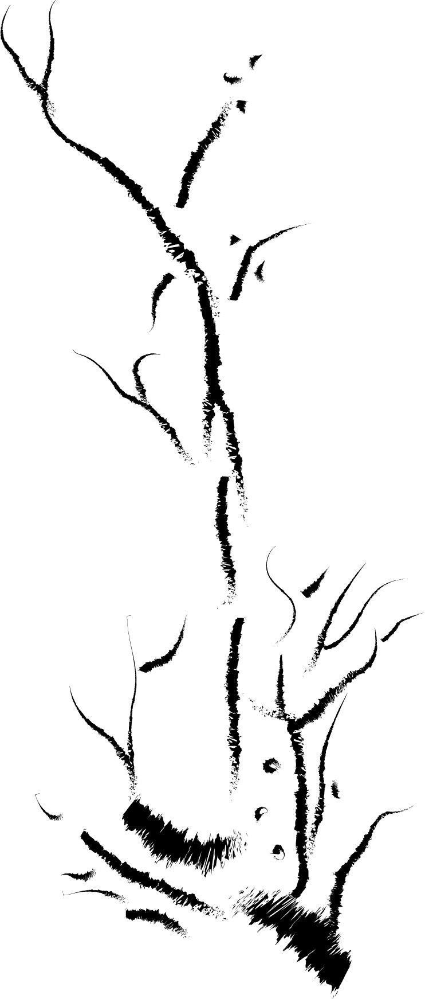

L'Empire Du Papier Vivant
Le Sumi-E

Dites aussi peinture TCh'an, "Sumi" signifie encre noire et le "e" signifie peinture. Comme son nom l'indique donc le Sumi-e est pratiqué que à l'encre noire. Il a comme sujet l'observation de la nature, tracé au pinceau sur une simple feuille de papier blanc, il permet de représenter le modèle le plus complexe. Elle a été introduite au Japon par des moines zen ( bouddhismes zen ) " Par sa main le peintre laisse une trace indélébile sur le papier. Par sa posture, son souffle, il engage toute sa personne. "
Ses Oeuvres :